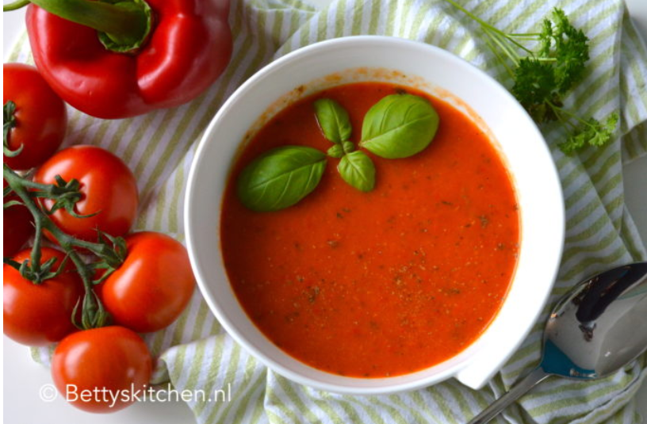

paprikasoep lekker voor voor het eeten
Snijd de paprika’s, ui en knoflook in stukjes. Giet een scheutje olie in een soeppan en bak de ui en knoflook. Voeg na een paar minuten de paprika toe en bak nog 2-3 minuten mee. Daarna kunnen de rest van de ingrediënten erbij. Breng de soep aan de kook en laat ongeveer 15 minuten koken. Pureer de soep met een staafmixer.
